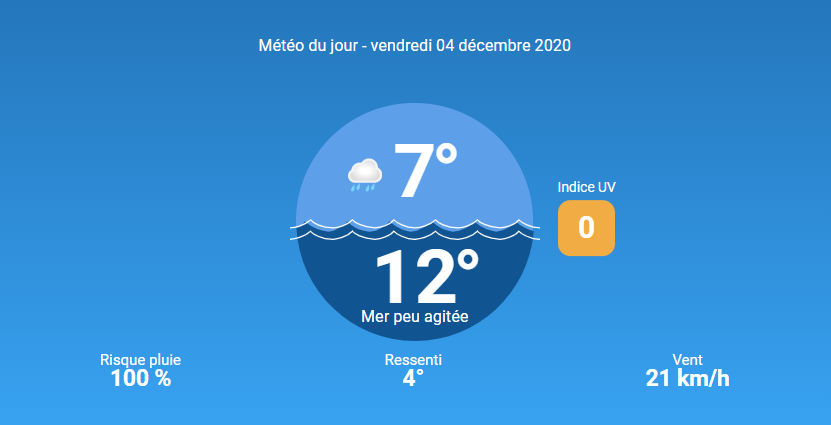

Plage de Calais :
Très bon spot à marée haute avec de la place mais remplis de monde en été, quand il fait beau. C’est donc un des spots les plus incontournables durant l’année, à condition d’éviter l’été, durant lequel il n’y a pas beaucoup de place. Le vent rentre assez bien et donc provoque de bonne vague.
Meteo à la plage de Calais :
Informations sur les caracteristiques de la plage :
Pour la toxicité aujourd'hui elle est de : 0,3 UTa
Pour les fond marin aujourd'hui elle est de : 9 m
Pour la houle aujourd'hui elle vien du : N
Pour la marée aujourd'hui elle est : haute à 14h35